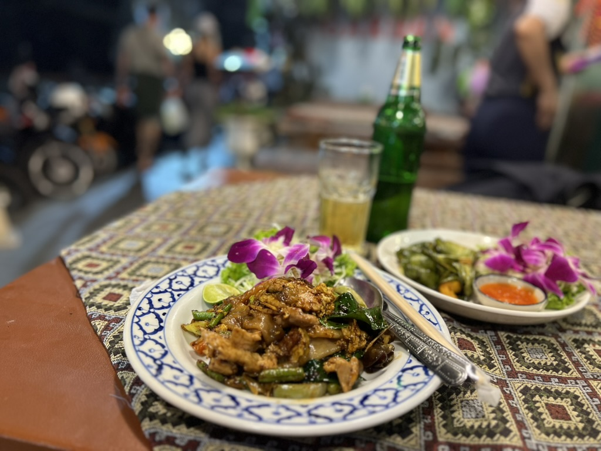

เดอะการ์เด้น ร้านอาหารและเกสต์เฮาส์ · The Garden Restaurant & Guest House

★ สวนอาหารและเกสต์เฮาส์กลางถนนลอยเคราะห์ จานกระเบื้องลายน้ำเงิน กล้วยไม้วางบนผัก ไก่ห่อใบเตยจิ้มน้ำหวาน — สงกรานต์เฮามานั่งตี้นี้ทุกปี เปียกครบแต่ยังได้กิ๋นข้าวสบาย ๆ น่อ · A garden restaurant and guest house on Loi Kroh — blue-and-white porcelain, orchids laid on the greens, chicken folded in pandan with sweet chilli. At Songkran you keep your table and still get thoroughly, joyfully soaked.
- หมวด · Category
- ร้านอาหาร-ของกิน · Food & Eats · โรงแรม-ที่พัก · Hotels & Stays · ที่เที่ยว-ของดี · Sights & Good Things
- ที่อยู่ · Address
- 69 ถนนลอยเคราะห์ ต.ช้างคลาน อ.เมืองเชียงใหม่ จ.เชียงใหม่ 50100
- ถนน · Road
- Loi Kroh Road
ดูอีก 6 ที่บนถนนเดียวกัน เรียงตามลำดับที่เดินผ่าน · See 6 more on the same road, in walking order - เวลาเปิด · Hours
- Mo-Su 10:00-23:00
- อาหารแนว · Cooks
- thai
- แผนที่ · Map
- OpenStreetMap · Google Maps

— ผู้สนับสนุน · sponsor —Skip DJT — บินฟลอริดาให้ถูกลง เทียบสนามบินก่อนจอง · Skip DJT — fly Florida for less: compare the airports before you bookลงโฆษณาที่นี่ · advertise here
ข้อมูลจาก OpenStreetMap · Data from OpenStreetMap · 2026-07-27